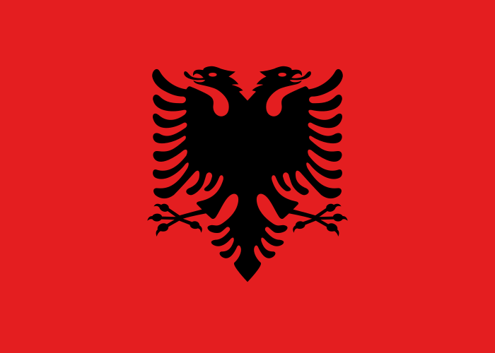

Albania
Maantieteestä
Rannikkoalangot ovat Albanian ruoka-aitta, sillä kapea rannikkokaistale on maan ainoaa viljelyskelpoista aluetta. Osa rannikosta on soistunutta. Vuoristot peittävät suurinta osaa maata.
Maan pohjoisosassa sijaitsee Albanian Alpit ja etelä- ja keskiosat ovat korkeaa ylänköä. Ylängöiltä saavat alkunsa monet Adrianmereen laskevat joet, joista tärkeimmät ovat Semani, Drini ja Vijose. Maan suurin järvi on Shkodër ja korkein kohta on Maja e Korabit (2 753 metriä).
Muuta tietoa
| Valtiomuoto: tasavalta |
| Pinta-ala: 28 748 km2 |
| Väkiluku: 3 011 405 |
| BKT: 26,54 miljardia USD |
| Virallinen kieli: albania |
Suurimmat kaupungit:
|
| Lippu:  |